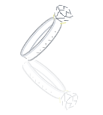

1999年3月 喧嚣的机场大厅，他走过来叫她的名字暖暖，一个穿着有木扣子的棉布衬衣的男人。
她记得他的声音。温和的，带着一点点沉郁的锐利。在打电话给林的那段日子里，有时来接电话的就是这个和林同租一套公寓的男人。北方人。是林以前的同事。
城说，林晚上临时要加班。他对她微笑。在大厅明亮而浑浊的空气中，这个穿着粉色碎花裙子的女孩，疲倦而安静的，象一朵阴影中打开的清香花朵。独自拖着沉重的行李，来投奔一个爱她的男人。
他们走到门外。天下着细细的春天夜晚的雨丝，打在脸上冷冷的。帮她打开TAXI的车门时，他伸出大大的手挡在她的头顶上。暖暖，你等一下。他说。再跑回来的时候，手里抱着一大捧的纯白的香水百合。林嘱咐过我要买花给你，我想你会喜欢百合。他把沾着雨珠的花束放到她的怀里。
他笑的时候露出雪白的牙齿，象某种兽类。温情而残酷。那件浅褐色的衬衣上有一排圆圆的木扣子。是暖暖喜欢的。
晚上三个人吃饭。还有他的女友小可。
小可是土生土长的上海女孩，穿伊都锦的黑色裙子，刷淡淡的紫色胭脂。不是很漂亮却有韵味。
暖暖吃了点东西，就早早上床去睡，她太累了。林的棉被和枕头上有她陌生而有亲切的气息。墙上还有她的一张黑白照片，是他给她拍完手洗出来的。暖暖睁着明亮漆黑的眼睛，带着微微惶恐和脆弱的表情。碎碎的短发在风中飞扬，笑容无邪。那时候她读大一，林是大三的高年级男生。对暖暖穷追不舍。
暖暖迷糊地躺在那里，想着自己现在是在一个陌生的城市里，是林的城市。他叫她过来，她就来了。就好象在新生舞会上第一次遇见林，这个能说会道的精明的上海男孩，他教她跳舞，他说把你的左手放在我的肩上，右手放在我的手心里。她就把自己的手放在了他的手上。
半夜林把她抱了起来，乖暖暖，要把裙子换掉。他轻轻地亲吻她的额头。你终于到我身边来了，暖暖。在黑暗中，他们开始做爱。暖暖是有点恐惧的。恐惧而惘然。在疼痛中甚至感觉到无助。
她想到厨房去喝水。没有开灯。走过客厅的时候，突然听见开门的声音。进来的是送小可回家的城。在门口看见穿着白棉布睡裙的暖暖，有点惊慌地站在那里。
外面还有淅沥的雨声。阴暗潮湿的空气中弥漫着清幽的花香。是插在玻璃瓶中的那一大捧百合。两个人面对面地注视着，突然丧失掉了语言。寂静中只有雨点打在窗上的声音。
似乎是过了很久，城关上了门，从她身边安静地经过，走到他自己的房间里。
1999年4月 她放着一些轻轻的如水的音乐。寂静的样子。
暖暖的生活开始继续。
一早林要从浦东赶到浦西去上班，然后有时晚上很晚才会回来。他在那家德国人的公司里做得非常好。工作已经成为他最大的乐趣。其他的就是偶尔早归的晚上，吃完饭在电脑上打游戏，然后突然大声地叫起来，暖暖，我的宝贝，快过来让我亲一下。
城接了个单子，一直在家里用电脑工作。家里常常只有他们两个人，有时小可会过来，但她不喜欢做饭。所以暖暖每天主要的事情就是做饭，中午做给城吃，晚上做给两个男人吃。
城写程序的时候，房间的门是打开的。他喜欢穿着很旧的白衬衣和牛仔裤，光着脚在那里埋头工作，喝许多的咖啡。房间里总是有一股浓郁的蓝山咖啡豆的香味。暖暖中午的时候，会探头进去问他想吃什么。渐渐地也不再需要问他。知道他喜欢吃西芹和土豆。她给他做很干净的蔬菜。吃饭的时候，两个人都不喜欢说话。但是有一种很奇怪的默契。两个人的心里都是很安静的。
城感觉到房间里这个女孩的气息。有时她独自跪在地上擦地板，有时洗衣服，一边轻轻地哼着歌。她喜欢放些轻轻的音乐，通常是爱尔兰的一些舞曲和歌谣。然后做完事情后，就一个人坐在阳台的大藤椅上看小说。她是那种看过去特别干净的女孩，没有任何野心和欲望。就象她的黑白相片。寂静的，不属于这个喧嚣的世间。
小可对城说，暖暖应该是传统的那种女孩，却做着一件前卫的事情。同居。
城说，她和你不一样。她是那种不知道自己要什么的女孩。
1999年5月 似乎他注定要这样安静地等待着她。在人群涌动的黄昏暮色里。
下午城去浦西办事情。暖暖出去买菜的时候，习惯性地没有带钥匙。把自己关在了门外。
打手机给城。城说，暖暖要不出来吃饭吧。不要做了，林晚上反正要加班。他们约在淮海路见面。暖暖坐公车过隧道的时候，才发现自己来上海快一个月，林从没有带她出去玩过。
暮色寂静的春天黄昏。街上是行色匆匆的人群。暖暖下车的时候，对着镜子抹了一点点口红。她还是穿着自己带来的碎花的棉布裙子。柔软的裙子打在赤裸的小腿上，有着淡淡怅惘的心情。
城等在百盛的门口。在人群中远远的看过去，他是那种沉静的，又隐隐透出锐利的男人。暖暖想起自己上大学的时候，很喜欢看亦舒的小说。有三本书是写得非常好的，人淡如菊，喜宝和连环。亦舒写的不是俗气的言情小说。对爱情和人性她有着寂寞和透彻的领悟。暖暖喜欢她笔下的男人。带着命定的激情和忧郁。象鲁迅的伤势。涓生。她用过那个名字。很少有男人有这些东西了。他们逐渐变成商业社会里的动物。例如林。他渐渐让暖暖感觉到陌生。
可是城等待着她的样子。让她想起他们在机场的第一次相见。熟悉的感觉。似乎他注定要这样安静地等待着她。暖暖突然感觉到眼里的泪水。
城带暖暖去吃了她喜欢的水果比萨。在必胜客比萨饼店里，暖暖侧着头，快乐地点了橙汁和色拉。她象个没有得到照顾的孩子。寂寞的，让人怜惜的。城安静地注视着她。他体会着女孩与女孩之间的不同。小可独立精明，永远目的明确。可是暖暖是暧昧脆弱的。她象一朵开在阴暗中的纯白的清香的花朵。
他们没有说太多的话，和以前一样。只是偶尔，城说一小段他北方的家乡，和他童年的往事。暖暖微笑着倾听他。他们这顿饭吃了三个小时。在流水般的音乐里，在彼此的视线和语言里，温柔地沉沦。
打的回家的时候，暖暖睡着了。她的脸靠在城的肩上，轻轻地呼吸。城伸出手去扶住她的脸，不让她滑下来。一边低声地叫她，暖暖，不要睡着啊，我们一会儿就到家了。
是在公寓楼阴暗的楼梯上，在淡淡的月光下，暖暖看到城注视她的眼睛，疼惜而宛转的，充满爱怜。她是这样近的看着他的脸。一个带着一点点落拓不羁的男人。他的气息，他的棉布衬衣，他的眼睛。
暖暖，你让我的心里疼痛，你知道吗。他伸出手抚摸她的脸颊。他克制着自己。
有时候，我会很害怕。城。这是真的。女孩温暖的眼泪滴落在他的手心上，几乎是在瞬间，所有的刻意和压抑突然崩溃。他无声地拥她入怀，激烈得近乎粗暴地堵住她的嘴唇，想堵住她的眼泪。暖暖，暖暖，我的傻孩子。
他把脸埋在她的颈窝上，感受到窒息般的激情，淹没的理性和无助的欲望。你是美好的。暖暖。他低声地说。为我把你的头发留长好不好。你应该是我的。
1999年6月 你知道你无法把我带走。你知道我们是不自由的。
有些人注定是要爱着彼此着。暖暖想。甚至她想，认识了林也许只是为了能够和城的相遇。时间和心是没有关系的。认识城是一个月。和林是四年。
可是他们做不了什么。似乎也没有想过要做些什么。付出的代价太大，不知该如何开始。林和小可都是没有错的。他们也没有错。所以当城对她说，他找了份工作，要搬到单位宿舍里去住的时候，暖暖轻轻地点了点头。她是知道他的。他也只有如此做。
小可帮城一起来搬东西。她对暖暖说，我们的房子已经付了第一笔款子，钥匙要过半年拿到手。城现在搬出去也好，让你们两个人好好地过没人干扰的生活。
好象是起风了。
城和他们在一起的最后一个晚上。暖暖在厨房里做晚饭。林喜欢吃的鱼和城喜欢吃的西芹，每天她给两个男人做不同口味的菜。林依然沉溺在电脑游戏里面，城写程序，暖暖在厨房里放了一个小小的收音机，收听调频的音乐节目，一边透过窗口看着暮色的天空，大片灰紫的云朵，和逐渐暖起来的春风。这样的时候，她的心里就会想起那个迷离的夜晚。在黑暗的楼道上，城霸道野性的气息，激烈的亲吻，温柔的疼痛。
他是她可以轻易地爱上的男人。
他是别人的。
凌晨三点的时候，暖暖醒过来。林在黑暗中迷糊地说，你又要去喝水。他知道这是暖暖的一个习惯。
暖暖光着脚轻轻地走到客厅里，她没有开灯。窗外很大的风声，房间里依然有百合清冷潮湿的花香。那是她到上海的第一天，城买给她的。他说你也许是喜欢百合的。她的确喜欢百合。
她打开冰箱倒了一杯冰水。黑暗中一双手无声而坚定地捕捉了她。她知道是谁。他们没有发出任何声音。他拥抱住她的时候有轻轻的颤栗。他说，暖暖，我们是有罪的吗。可是上天应该原谅我。因为我是这样的爱你。他把她推倒在墙上。她在他的亲吻中感觉到了咸咸的泪水。她低声地说，城，我的头发很快就会长了。你要离开我。他说，我可以把你带走，我们是自由的。她说，你知道你无法把我带走，你知道我们是不自由的。你一直都知道。
1999年7月 我知道我们似乎无法在一起
很安静的生活。两个人。房间里一下子显得空荡了许多。
林去上班的时候，暖暖在家里洗衣服，看书，还是常常放着轻轻的爱尔兰音乐。在阳台上种了一些鸢尾和牵牛。有时给花浇完水，就一个人对着明晃晃的阳光出神。
房间里再也听到不清脆的键盘敲击声。没有了那个剃着短短平头的男人，穿着很旧的白衬衣和牛仔裤，光着脚坐在电脑面前工作。他安静的气息和蓝山咖啡浓郁的清香。在她跪在地上擦地板的时候，她常常很安心地听着他的键盘声音。因为一探头就可以看见他。他叫着她的名字，暖暖。用他的北方口音的普通话。
没有和林做爱已经很久。原来女人和男人真的不同。女人的心和身体是一起走的。如果心不在身体上，身体就只是一个空洞的陶器。林没有勉强她，他说，暖暖你是否感觉很寂寞，或者出去随便找份事情做，可以有些社交。可是我又真的不放心你出去。你总是需要照顾。
暖暖说，你是在照顾我吗。她的脸上带着淡淡的微笑，她是不轻易表达自己失望和不满的人。和林在一起的日子，的确是寂寞的。他不知道她想要什么。也许如果他知道，他肯定会非常愿意给她。但是问题是，他不知道。也许永远都是疑问。他不是和她同一类的人。虽然他爱她。
但是暖暖想她还是可以和林一起生活下去。就象城会和小可在一起一样。
也许和林同居半年左右他们就可以结婚。过着平淡而安静的生活。即使是有点寂寞的。
下午的时候，暖暖一个人出门，去了医院。天气已经非常炎热了。暖暖坐了很长时间的车，照着地图找到瑞金医院。人很多，坐在走廊的靠椅上等着叫号的时候，买了一本画报看。画报上有一组特别报道，一大堆可爱小宝宝的照片，下面是他们的父母对他们出生的感想。暖暖找到一个自己喜欢的宝宝，是个小男孩，好奇地睁着大眼睛，他的妈妈说，黑黑瘦瘦，眼睛又大，象个ET。问医生为什么会这么难看，医生说，还没有穿衣服嘛。的确是个很象ET的小宝贝。暖暖怜爱地看着那张照片。微笑的。
化验的结果很快就出来了。暖暖没有太大意外。医生问她你要它吗。暖暖说我回去想一想。走出医院的时候，她把那本画报紧紧地抓在手里。她想也许是个男孩子，会有和城一样的手指和眼睛。在路边的电话亭里，她给城打了手机。她一直都记得这个电话号码。这是他们分开后她第一次打给他。城在办公室里，暖暖在电话那端静默了很久，然后她说，城，我想见你。你可以出来吗。
还是在淮海路的百盛店门口。一样的暮色和人群。远远地看见城，一样地穿着旧的白棉布衬衣和牛仔裤。脸因为消瘦而显得更加的英俊和锐气。暖暖想，这真的是个和林不一样的男人。林每天都西装革履地去三十多层的大厦上班，已经放弃掉了他的锐气。而一个没有锐气的男人是让人感觉寂寞的。
城说，暖暖你好吗。他俯下脸看她。他的安静的目光象水一样无声地覆没。暖暖看得到里面的宛转和疼痛。但是在黄昏的暮色里，他们只是平淡地对望着。象任何两个在人群里约会的男女。
我好的。城。今天是我的生日。暖暖侧着脸微笑地看着他。要我买礼物给你吗。要啊。
他们走进了百盛。暖暖走到卖珠宝的柜台前，淘气地看着他，我喜欢什么，你就给我买什么好不好。城说，没问题，我带着信用卡。暖暖看了半天，然后指着一枚戒指说，我要这个。那是一枚细细的简单的银戒指，打完折以后是20元。
城说，暖暖，我想买别的东西。不要了，城，我们是说好的。好把。城无奈地点了点头。然后叫店员用一个紫色的丝绸盒子把它装了起来。把它放在暖暖的手心里的时候，他说，嫁给我，暖暖。他微笑着模仿求婚者的口吻。暖暖说，好的。然后她看到城的眼睛里突然涌满了泪水。
小可好吗。暖暖听见自己平静的声音。是在比萨饼店里。两个人坐在窗边，看着街上的霓虹和夜色。她希望我去美国读MBA。她姑姑在加州。一直叫我们过去。可是我不喜欢。
我知道。暖暖说，你是散淡的人，和小可是不同的。
而且我不放心你，暖暖。他低下头，有时我希望你尽快和林结婚，让我可以灰心，可有时我担心你不幸福。你会一辈子让我心疼。暖暖微笑地看着他，如果我想跟你走，你要我吗。城握住她的手，暖暖，有很多次我梦见我们一起坐在火车上。我知道我带着你去北方。路很长，可是你在我的身边。那是我最快乐的一刻。甚至希望自己不要醒过来。
我们可以吗，城。暖暖看着他。
可以的，暖暖。如果我们彼此都坚持下去，能够背负这些罪恶和痛苦，我们可以离开上海，离开一切。只要我们两个人。城紧紧地握住她的手指。我一直在失去你的恐惧里。暖暖。上天给我的任何惩罚都不会比这个更令我痛苦。
他们在明亮的地铁车站里等着最后一班地铁。
城说，暖暖，你尽快考虑，给我一个电话。我会处理和林和小可的一切事情。如果能够和你在一起，我愿意为你背负所有的罪恶。
暖暖说，好的。她看着城，她突然感觉到自己手指冰凉，心里钝重地疼痛起来。抱抱我，城，请抱抱我。城在人群中紧紧地抱住了她。他把她的头压在自己的胸口上，轻轻地说，暖暖，我已经无法忍耐这样的离别，或者让我一生都拥有着你，或者我们永远都不要相见。他的手指抚摸到她背上的头发，长长的漆黑的发丝，象丝缎一样光滑柔软。暖暖微笑着看着他，我努力地把它们留长了，城，我要用它们牵绊着你的灵魂。一辈子。
暖暖回到家的时候是深夜。林躺在沙发上睡着了。西装没有脱，地上堆着一些啤酒罐。
暖暖蹲下去，用手抚摸他的脸，然后林惊醒过来。暖暖，你跑到哪里去了。我下班回来第一次没有见你在家里，你让我很担心。
林，我有事情要告诉你。暖暖平静地看着他，她的脸象一朵苍白而艳丽的花，在黑暗中散发清冷的光泽。我不能再和你在一起。我有了孩子。可能不是你的。我想回家。
林惊异地看着她，为什么，暖暖，你在和我闹着玩吗。
不是。暖暖说。我不想让我们活在阴影里面，这对你不公平。如果没有孩子，我本来想就这样下去。可现在不一样。如果依然和你在一起，我会觉得我是有罪的人。可是我不愿意这样地生活。你知道。
我不会告诉你任何的细节。我只希望你能够原谅我。因为我曾经爱过你。因为我已经不再爱你。
1999年8月 一直在告别中
回家的航班是晚上九点。暖暖独自等在候机大厅里。外面下着细细的雨。
她没有给城打电话。不告而别也许能给他和小可更多的安宁。甚至她都不愿再让自己回想带给林的崩溃和伤害。她只是做了自己能够做的的事情。时间会磨平一切。
这一刻心里平静而孤单。陪伴着她的是来时的行李包，脖子上用丝线串着的那枚银戒指。和一个小小的生命。属于它的时间不会太多。她轻轻的把自己的手放在身体上。HI，小ET。她笑着对它说话，你会和我说再见吗。我们要和这么多的人告别。爱的，不爱的。一直在告别中。
1999年9月 或者我们永远都不要相见
在这个熟悉的城市里，暖暖重新开始一个人的生活，
黄昏的时候，她常常一个人出去散步。沿着河边的小路，一直走到郊外的铁轨。那里有大片空旷的田野。暖暖有时坐在碎石子上面看远处漂泊的云朵，有时在茂盛的草丛中走来走去，顺手摘下一朵紫色的雏菊插在自己的头发上。漆黑浓密的长发，已经象水一样地流淌在肩上。
她感觉到内心的沉寂。所有的往事都沉淀下来。偶尔的失眠的夜里，会看见城的脸，在地铁车站的最后一面，他搁着玻璃门对她挥了挥手，然后地铁呼啸着离去。空荡荡的站台上只有明亮的灯光。苍白地照在失血的心上。她独自在那里泪流满面。
他说，我已经无法忍耐这样的离别，或者让我一生都拥有着你，或者我们永远都不要相见。
她只能选择离去。因为不愿意让他背负这份罪恶。她已经背负了一半。于是就可以背负下全部。
在医院的时候，她终于放肆地让自己流下泪来。不仅仅是因为疼痛。她知道她终于割舍掉生命中与城相连的一部分。他们永远都可以成为陌路。
她开始去附近的一家幼儿园上班，兼职地给小孩子弹弹钢琴，教他们唱一些儿歌。
生活是单纯而寂静的。空气中开始感觉到风中的清冷。她常常穿着洗旧的棉布裙子，脸上没有任何化妆，只有一头长发象华丽的丝缎。甚至很少上街，除了上课，散步，她没有任何社交活动。也不认识任何的成年男人。除了陆。
陆是罗杰的父亲。罗杰是班里最淘气的男孩子，他的母亲在5年前和陆离异。陆对暖暖说，罗杰常对我说，他有一个有着最美丽头发的老师。暖暖微笑地站在阳光里，白裙和黑发闪烁着淡淡的光泽。那一天他们一起走出幼儿园。罗杰在前面东奔西窜。暖暖和陆一起走在石子路上，陆惊异地看着这个年轻的女孩，她悠然地抬头观望云朵，却没有任何多余的语言。
1999年10月 要嫁了，因为已经为你而苍老
一个月后，这个四十岁的男人对暖暖说，你是否可以考虑嫁给我。
暖暖看着他。他是非常普通的中年男人。她对他没有太深的印象。知道他很有钱，但并不显得俗气和浮躁。剪短短的平头，喜欢穿黑色的布鞋。不喜欢说话，却可以在一边看她用钢琴弹儿歌数小时。
暖暖说，为什么。陆说，我想你和别的女孩最大的区别是，你的心是平淡安静的。这样就够了。我见过的女人很多。你在我身边的时候，我心情是安宁的。
他看着这个素净的女孩。我知道你肯定有不同寻常的经历，你可以保留着一切，不需要对我有任何说明。我只希望给你稳定安全的生活，我们各取所需。你不觉得这是最明智的婚姻吗。
他的手轻轻地抚摸她如丝的长发。你的头发美丽而哀愁。就象你的灵魂。可是你可以停靠在这里。
举行婚礼的前一晚，天下起冷冷的细雨。
暖暖打开长长的褐色纸盒，里面是陆从香港买回来的婚纱。柔软的蕾丝，洁白的珍珠，是暖暖以前幻想过的样子。可是那时候她以为自己肯定要嫁的人是林。陆还订购了全套的钻石首饰。他说，你脖子上那枚银戒指已经挂了很久。我不要求你一定要把它换下来。你可以带着它。
可是也不是太久，只不过是三个月。暖暖想，为什么在心里觉得好象是上一个世纪的事情了呢。她抚摸着那枚小小的银戒指，它已经开始黯淡。这是城送给她的唯一一份礼物。那时候他们是在上海的大街上，陌生的城市，陌生的人群。和一次注定要别离的爱情。
暖暖彻夜失眠，一直到凌晨的时候，才迷迷糊糊地睡过去。然后凌晨三点的时候，突然床边的电话铃响起来。暖暖想自己是在做梦吧，一边伸出手去，在黑暗中拿起电话筒。寂静的房间里，只听到电话里面沙沙的声音。然后是一个男人北方口音的普通话。暖暖。他叫她的名字。
城，是你吗。暖暖觉得自己还是醒不过来。她真的太困了。可是她认得这个声音。只有一听到，就会唤醒她灵魂深处所有的追忆。线路不是太好，城的声音模糊而断续，他说，暖暖，我在美国加州。我走在大街上，突然下起大雨。
我以为我可以把你遗忘，暖暖。可是这一刻，我非常想念你。我感觉你要走了。
电话里的确还有很大的雨声。地球的另一端，是不会再见面的城。暖暖说，城，我要嫁人了。因为我已经为你而苍老。
城哭了。然后电话突然就断了。
暖暖放下电话。她看了看黑暗的房间。她想，自己是真的在做梦吧。城会有她的电话号码吗。可是摸到自己的脸，满手都是温暖潮湿的眼泪。
他们似乎从没有正式地告别过。而每一次都是绝别。
1999年12月 一场沉沦的爱情。终于消失。
圣诞节的时候，暖暖收到林的一张卡片。他说他准备结婚。另外城和小可都已出国。
在信的末尾，他说，暖暖，我想我可以过新的生活了，我可以把你忘记。
暖暖微笑地抚摸着卡片上凸起来的小天使图案。她开始有一点点变胖，因为有了孩子，陆坚持不再让她出去上课，每天要她留在家里。
罗杰快乐地在家里跑来跑去，和陆一起准备打扮一下那棵买回来的圣诞树。陆在客厅里大声地说，暖暖，你不要忘记喝牛奶。暖暖说，我知道了。这就是她的婚姻生活。平淡的，安全的。会一直到死。
端起牛奶杯的时候，暖暖顺手拉开窗帘，看了看外面。很奇怪的是，今年的圣诞，这个南方的城市开始下雪。是一小朵一小朵雪白的干净的雪花，安静地在风里面飘舞。在冬天的黑暗而寂静的夜空中。
暖暖看着飞舞的雪花，突然一些片段的记忆在心底闪过。遥远上海的公寓里，弥漫着百合清香的客厅，黑暗的楼道上，城激烈的亲吻，还有隔着地铁玻璃的城一闪而过的脸，是她见他的最后一面。那个英俊的忧郁的北方男人，可是她还记得他的手指，他的眼睛，他的气息，他的声音，模糊而温柔的，提醒着她在世纪末的一场沉沦的爱情。
可是心里不再有任何疼痛。
他终于消失。

附：失眠
安妮宝贝
凌晨三点。
黑暗寂静得没有任何声音。
逐渐静止下来的雨。潮湿的空气，
和这个不符合梦想的世界。
对一个失眠的人来说，没有任何东西是安慰。
穿着睡衣在房间里走来走去。
喝冰冷的水。
吃了三颗药片。
对着镜子看自己的脸。苍白而枯萎。
沉沦和放纵没有带来任何期待。
你想着自己还拥有的一些东西。例如往事和诺言。
你想你是病了。你的胃和灵魂一样焦灼空虚。
绝望是阴影无所不在。
可是在夜色里你是丧失了语言的花朵。
发不出任何声音。
也无法入睡。
我不应该这样的，我应该珍惜我的眼泪
但~~
从我1—17岁买的第一本小说就是他的蔷薇岛屿
真的好后悔爱上她
你不知道很多人会把戒指当挂件，配上链子或绳子挂在脖子上吗？
以后有看不明白的，还是自己多去想想，别开口就伤人。。。
如城说暖暖
她和你不一样。她是那种不知道自己要什么的女孩。
为什么会 喜欢安妮
安妮的东西总是让人觉得压抑而又忧郁
哥 说过安妮的文字很贴近人心底最深的地方
南生杀了他
还有那个孩子
暖暖 始终与城还是分开了
一开始就知道没结局
所以暖暖就逃离了。。。
暖暖 你真的幸福吗？
你真的会忘了和城 的一切
暖暖 你穿上婚纱时
会是怎么样的心情呢
他们似乎从来没有开始
就已经结束
为什么还这么废话 很讨厌的感情，很虚伪 很虚伪 很虚伪 很虚伪 很虚伪 很虚伪 很虚伪 很虚伪 很虚伪 很虚伪 很虚伪 很虚伪 很虚伪 很虚伪 很虚伪 很虚伪 很虚伪 很虚伪 很虚伪 很虚伪
我很用力的笑着答应:我会的.
我始终喜欢质朴单纯的东西.所以依旧微笑着---
很喜歡，好喜歡。
你还记得暖暖是你起的名字吗？
多少年以后，当我想起，我曾有个名字叫暖暖的时候
也许依旧会泪流满面，也许依旧会痛不欲生
只是你从不知道，我是如此的深爱你
直到今天，我将转身离去
最后一句话，我才告诉你
不是我不懂珍惜
是造化太扑朔迷离
不是我不愿意
是彼此都无法拼尽全力
暖暖放弃了与城在一起的机会，不愿让城背负所有的罪，她相信时间是治愈所有人 情感的良药，她选择了最安全的方式解决她与城的感情。虽说不是每个人都有不错的 结局，但不免让我有点遗憾啊……
幸福的时候两个人，孤独寂寞的时候却只有一个人承担，
注定是一场破碎的表演
都是神的孩子
我们坚强 到 让你们 心疼
有感：
每一篇文字的存在都有它存在的意義，
這也是寫給特定的人群，
因爲，只有一部分人才能明曉。
“因爲懂得，所以慈悲”
我始終記得這句話。
如果涅磐换来的是无穷无尽的等待……，那又该如何是好？
满满的话在心头堵塞，这一刻我什么都说不出来。。。
人生本是不断的离别，伤感一直都在。真想要一场不散的宴席，但内心又向往着远方的漂泊。。
内心的纠结，矛盾。痛楚。。安妮的文字总能恰好得给与安慰，在故事里藏着我们同样的影子。。在这里，也在那里。。。。
他們說這是一篇擁有着完美結局的故事
是你寫過唯一一篇有完美結局的故事
或許結局是完美的
可為什麼
我還是讀的那麼悲傷
心隨著文章落下，無比的沉重
沒有一絲的起伏
只有悲傷。
虽然到最后心里可以没有疼痛，
可是我却觉得依然那么悲伤。。。
算一下时间，将近20年，似乎弹指间，再看《暖暖》，泪流满面。。。。。
我们都一样，也不一样。
回头再看，失掉的心、没了的心，它依然还在沉闷而倔强的痛啊。
它没了，它还在痛。
女人怎么都这么笨这么麻烦啊。我得好好想想要不要找女朋友，太可怕了。。。
这不是很好的状态。